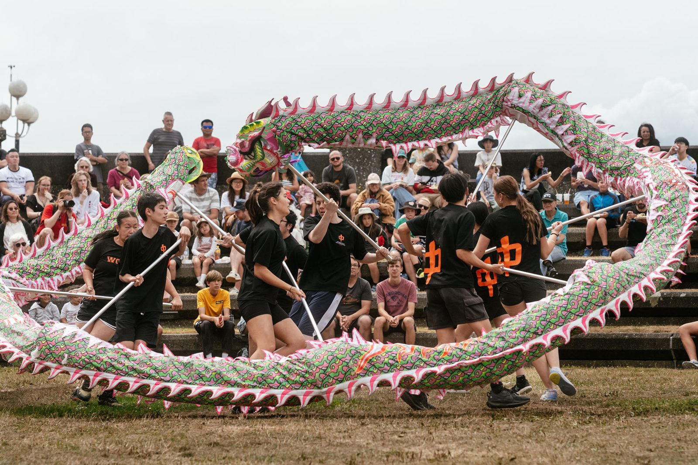

Record-breaking Lunar New Year celebrations bring Asia to Wellington’s waterfront
Wellington welcomed the Year of the Fire Horse in spectacular style, with record crowds for the most diverse and inclusive programme in the festival’s 26-year history.

Wellington has welcomed the Year of the Fire Horse in spectacular style, with record crowds turning out over the weekend for the most diverse and inclusive programme in the 26-year history of the Wellington Lunar New Year Festival, organised by the Asian Events Trust.
Across the capital, communities came together in a vibrant celebration of culture, colour and connection, turning the city into a living showcase of Asia in Wellington’s backyard.
Audiences enjoyed performances highlighting culture and Lunar New Year traditions from China, the Philippines, Vietnam, Thailand, Japan and Korea, joined by local performers — Asian and non-Asian alike — who brought their own horse-inspired performances to the stage.
Galloping into the New Year
Saturday night drew unprecedented numbers to the waterfront. Thunderous taiko drummers and mesmerising dragon dancers energised the crowds, alongside a special late-night opening at the Museum of New Zealand Te Papa Tongarewa.
An estimated 10,000 people packed the waterfront — with many more watching across the CBD — for a 10-minute fireworks display that lit up the harbour.
Summer weather continued into Sunday for a record-breaking Festival Day: five hours of traditional and contemporary performances, a bustling Asian Market of arts, crafts and food, and “Horsing Around” activities for families.
“This year has shown the strength of our diversity and the power of coming together to celebrate it.”
Linda Lim, Chair of the Asian Events Trust and Programme Director
“It was fantastic to see Wellingtonians turn out in such extraordinary numbers and engage so deeply with every part of the festival,” says Linda. “To see so many communities share their culture so generously — and the wider public embrace it — is truly special.”
Once again, the festival showed that when communities unite, the result is vibrant, welcoming and memorable.